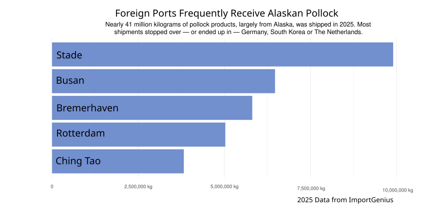

A Lot of Pollock is Fished in Alaska. Almost None Stays There.
Resource exploitation in Alaska is no secret. Millions of pollock — and dozens of faraway companies — strip the waters, dealing irreparable harm.
By: Natalie Jonas
Tens of millions of kilograms of Alaskan pollock left the Bering Sea in 2025 — the outset of their journey all around the world.
Dutch Harbor, the most productive port in the country, exported approximately 354 million kilograms of seafood worth nearly $225 million last year. Nearly $2.5 billion in national economic output is in relation to the Alaskan pollock industry, yet about 75% of all pollock caught leaves the state.
Every year, millions of kilograms of seafood leave Alaska on vessels flying “flags of convenience,” which allow ships to bypass more stringent regulation in their true home nations. Fishing vessels registered all over the world — Liberia, the Marshall Islands, Cyprus — move pollock out of the state. Alaska Natives and fishermen in the Bering Sea are seeing the local waters razed and the fiscal benefits eventualizing far from home.
Alaskan pollock is a very popular stock, used to make imitation crab meat, supplements, fish sticks in school lunches across the country and even the McDonald’s Filet-O-Fish. Pollock harvesting is a heavily industrialized business which uses massive trawling machinery that scrapes the ocean floor, dragging up fish, bycatch and the delicate organisms on the ocean floor.
Unabated bottom trawling along with a rapidly changing climate has wreaked havoc on the sensitive ecosystem in the Bering Sea. The volatility in the Bering Sea, along with recent population collapses, has led to caps on the amount of stock allowed to be caught and sold — amounting to only 1.375 million metric tons of Alaskan pollock (from the Bering Sea) during the 2025 season.
Alaska’s factory trawl fleet’s black cod (Bering Sea sablefish) catch grew nearly 2000% from the early 2010s to 2023, forcing out smaller, locally-owned fishing vessels and greatly increasing trawl net deaths of orcas in the Bering Sea.

Juvenile pollock stock, vital Chinook salmon prey, fell 30% from 2024 to 2025. Yet, in January 2026, the Marine Stewardship Council’s (MSC) recertification of the Bering Sea/Aleutian Islands and Gulf of Alaska flatfish fisheries as “sustainable” faced criticism in light of their heavily criticized bycatch and trawling activities. The trawling industry is a major financial supporter of the MSC.
Dark money flowing from the trawling industry to NOAA and other regulatory agencies has blocked attempts to curb it. Alaska’s seafood industry has been in a rapid decline — a 50% drop between 2022 and 2023 — largely as a result of the snow crab stock collapse in 2022.
Senator Dan Sullivan has deep ties to dark money flowing from the trawling industry in the Bering Sea. Trident Seafoods, the largest trawler in the region, was his most generous donor during his run for office ($72,020). Senior Senator Lisa Murkowski also saw massive cash flow prior to her re-elections from Trident and other trawlers. More than 70% of Alaskans support a trawl ban, but aggressive lobbying continues to keep actionable legislation an unlikely feat.